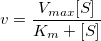
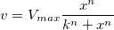

Nichtlineares Anpassen mit Systemfunktion
Fitting-NLFit-Built-in
Zusammenfassung
Das NLFit-Dialogfeld ist ein interaktives Hilfsmittel, das es Ihnen erlaubt, das Anpassungsverfahren während des nichtlinearen Anpassungsprozesses zu überwachen. Dieses Tutorial passt sich an die Michaelis-Menten-Funktion an, ein Basismodell in der Enzymkinetik, und zeigt Ihnen einige grundlegende Funktionen des Dialogfelds NLFit. Während der Anpassung zeigen wir Ihnen, wie man einen globalen Fit durchführt, der Ihnen erlaubt, zwei Datensätze gleichzeitig anzupassen und einige Parameterwerte zu teilen.
Origin-Version mind. erforderlich: Origin 8.0 SR6
Was Sie lernen werden
Dieses Tutorial zeigt Ihnen, wie Sie:
- eine einzelne ASCII-Datei importieren,
- eine globale Anpassung mit gemeinsamen Parametern durchführen,
- einen Anpassungsbereich wählen und einen Teilbereich der Daten anpassen,
- das Befehlsfenster verwenden, um eine einfache Berechnung durchzuführen.
Schritte
Die Datei importieren
Öffnen Sie eine neue Arbeitsmappe. Wählen Sie Hilfe: Ordner öffnen: Sample-Ordner ... im Menü, um den Ordner "Samples" zu öffnen. Öffnen Sie in diesem Ordner den Unterordner Curve Fitting. Dort befindet sich die Datei Enzyme.dat. Ziehen Sie diese Datei per Drag&Drop in das leere Arbeitsblatt, um sie zu importieren.
Daten zeichnen
Markieren Sie die Spalten B und C und zeichnen Sie sie als Punktdiagramm, indem Sie auf die Schaltfläche klicken.
Mit der Michaelis-Menten-Funktion anpassen
Die Michaelis-Menten-Funktion für einzelne Substrate ist ein Grundmodell, das in der Forschung zur Enzymkinetik verwendet wird.
- 
Der Parameter  ist die Reaktionsgeschwindigkeit, ist die Substratkonzentration,
ist die Reaktionsgeschwindigkeit, ist die Substratkonzentration,  ist die maximale Geschwindigkeit und
ist die maximale Geschwindigkeit und  stellt die Michaelis-Konstante dar. Die Parameter und sind wichtige Enzymeigenschaften und ihre Werte können durch Anpassen der M-M-Funktion an eine - vs. -kurve bestimmt werden. In Origin gibt es keine M-M-Anpassungsfunktion, allerdings können wir zum Durchführen der Anpassung ein allgemeineres Modell verwenden, die enthaltene Hill-Funktion:
stellt die Michaelis-Konstante dar. Die Parameter und sind wichtige Enzymeigenschaften und ihre Werte können durch Anpassen der M-M-Funktion an eine - vs. -kurve bestimmt werden. In Origin gibt es keine M-M-Anpassungsfunktion, allerdings können wir zum Durchführen der Anpassung ein allgemeineres Modell verwenden, die enthaltene Hill-Funktion:
- 
wobei  die kooperativen Bindungsseiten ist. Bei einem Modell für ein einzelnes Substrat legen wir fest und vereinfachen auf diese Weise das Modell, so dass es sich wie die M-M-Funktion verhält.
die kooperativen Bindungsseiten ist. Bei einem Modell für ein einzelnes Substrat legen wir fest und vereinfachen auf diese Weise das Modell, so dass es sich wie die M-M-Funktion verhält.
Es gibt zwei Kurven, eine ist die Reaktion ohne einen Inhibitor und die andere ist die Reaktion mit einem Inhibitor. Wir verwenden das Hilfsmittel NLFit, um diese zwei Kurven gleichzeitig anzupassen. Da für die Hemmungsreaktion die maximale Geschwindigkeit die gleiche ist wie bei der nicht gehemmten Reaktion, können wir den -Wert während des Anpassungsverfahrens teilen und eine globale Anpassung durchführen.
- Wählen Sie bei aktivem Diagramm den Menüpunkt Analyse: Anpassen: Nichtlinearer Fit, um das Dialogfeld NLFit aufzurufen. Wählen Sie die Funktion Hill aus der Kategorie Growth/Sigmoidal auf der Seite Einstellungen: Funktionsauswahl.
- Klicken Sie auf der Seite Einstellungen: Datenauswahl auf die dreieckige Schaltfläche neben den Eingabedaten und wählen Sie Alle Diagramme in aktive Seite einfügen, um den Datenbereich festzulegen.
- Wählen Sie Allgemeiner Fit aus der Auswahlliste Fitmodus für mehrere Datensätze auf der Seite Einstellungen: Datenauswahl.
- Wechseln Sie zur Registerkarte Parameter und aktivieren Sie das Kontrollkästchen Teilen in Zeile Vmax. Dieses KontrollkästchenTeilen ist nur im Modus Allgemeiner Fit vorhanden. Aktivieren Sie das Kontrollkästchen Fest für n und n_2 und stellen Sie sicher, dass Ihre Werte 1 sind.
- Klicken Sie auf die Schaltfläche Fit, um den Analysebericht zu erzeugen. Eine Tabelle mit den Anpassungsparametern wird in das ursprüngliche Diagramm eingefügt (nur die Wertetabelle der Anpassungsparameter wird in der folgenden Abbildung zeigt.)

Dem Anpassungsergebnis können wir entnehmen, dass die maximale Geschwindigkeit etwa 2162,8 beträgt. Der Wert von für das Modell ohne Inhibitor beträgt 1,78 . Der Wert für das Modell mit Inhibitor beträgt 4,18 .
Anpassung im Lineweaver-Burk-Diagramm
Wie wir wissen, können die Modellparameter auch durch ein Lineweaver-Burk- oder ein Doppel-Reziprok-Diagramm geschätzt werden. Ein Lineweaver-Burk-Diagramm nimmt den reziproken Wert beider Seiten der M-M-Funktion und zeichnet mit 1/v vs. 1/[S]:
![\frac{1}{v}=\frac{1}{V_{max}}+\frac{K_m}{V_{max}[S]}](../images/NLFIT_Built_In/math-7b926509a42cfcf4d7b1269ee5b66f95.png "\frac{1}{v}=\frac{1}{V_{max}}+\frac{K_m}{V_{max}[S]}")
Dies ist eigentlich eine lineare Funktion:
Wir werden die Daten für No Inhibitor verwenden, um zu zeigen, wie man und mit dem L-B-Diagramm berechnet.
- Gehen Sie zurück zum Arbeitsblatt mit den Rohdaten und fügen Sie noch zwei weitere Spalten hinzu, indem Sie die Schaltfläche
 drücken. Klicken Sie mit der rechten Maustaste auf Spalte D und wählen Sie Setzen als: Als X setzen aus dem Kontextmenü, um sie als X-Spalte festzulegen. Klicken Sie mit der rechten Maustaste nochmals auf Spalte D, wählen Sie Spaltenwerte errechnen um das Dialogfeld Werte setzen zu öffnen Geben Sie in dieses Dialogbearbeitungsfeld
drücken. Klicken Sie mit der rechten Maustaste auf Spalte D und wählen Sie Setzen als: Als X setzen aus dem Kontextmenü, um sie als X-Spalte festzulegen. Klicken Sie mit der rechten Maustaste nochmals auf Spalte D, wählen Sie Spaltenwerte errechnen um das Dialogfeld Werte setzen zu öffnen Geben Sie in dieses Dialogbearbeitungsfeld 1/Col(A) ein und setzen den Modus Neu berechnen auf Kein, da wir die Reziprokwerte in diesem Beispiel nicht automatisch aktualisieren brauchen.
- Entsprechend setzen Sie die Werte aus Spalte E mit
1/Col(B). Geben Sie den Langnamen für die Spalten D und E als ![1/[S]](../images/NLFIT_Built_In/math-9ef7cbd115a40bb95a13f1f7dc418975.png "1/[S]") bzw. ein. Dann haben wir:
bzw. ein. Dann haben wir:
- Markieren Sie die Spalten D und E, und klicken Sie auf die Schaltfläche , um ein Punktdiagramm zu erstellen.
- Aus der oberen Gleichung wissen wir, dass es einen linearen Bezug zwischen
1/v und 1/[S] gibt, also können wir das NLFit-Hilfsmittel nehmen, um eine gerade Linie auf diesem Diagramm anzupassen. (Sie können auch das Hilfsmittel Linearer Fit aus Analyse: Anpassen: Linearer Fit verwenden.)
- Rufen Sie nochmals den Dialog NLFit auf, wählen Sie die Funktion Line aus der Kategorie Polynomial und klicken Sie dann direkt auf die Schaltfläche Fit
 , um Ergebnisse zu erzeugen.
, um Ergebnisse zu erzeugen.
- Vom Diagramm her könnte man bezweifeln, dass dieses die beste Anpassungskurve ist, da es einen weit entfernten Punkt gibt. Tatsächlich ist die rechte Seite des L-B-Diagramms ein Bereich mit niedriger Substratkonzentration. Es kann hier ein erheblicher Messfehler vorliegen, so dass wir diesen Punkt während der Anpassung besser ausschließen.
- Klicken Sie das Symbol für Schließen in der oberen linken Ecke und wählen Sie Parameter ändern , um das Dialogfeld NLFit aufzurufen.
- Auf der Seite Einstellungen: Datenauswahl klicken Sie auf die Schaltfläche
 im Knoten Eingabedaten und wählen dann im Ausklappmenü Alle Daten des Diagramms erneut auswählen.
im Knoten Eingabedaten und wählen dann im Ausklappmenü Alle Daten des Diagramms erneut auswählen.
- Der Dialog NLFit wird minimiert und Ihr Cursor nimmt die Form an, wenn Sie sich zur Diagrammseite bewegen. Klicken Sie und zeichnen Sie ein Rechteck, um die Datenpunkte auszuwählen, die Sie anpassen möchten. Der Eingabebereich wird durch vertikale Linien gekennzeichnet. Sie können auch auf diese Linien klicken und sie verschieben, um den Eingabebereich zu verändern.
- Klicken Sie auf die Schaltfläche im Fenster Daten in Diagramm auswählen, um zum Dialog NLFit zurückzukehren.
- Drücken Sie die Schalftfläche Fit im Dialogfeld NLFit an, um das Ergebnis neu zu berechnen. Sie können anhand der Grafik erkennen, dass der Ergebnisreport aktualisiert wurde.
- Wenn der Schnittpunkt mit der Y-Achse der angepassten Kurve ist, ist er in diesem Beispiel gleich
4,76191E-4. Um den Wert zu bestimmen, wählen Sie zum Öffnen des Befehlsfensters Fenster: Befehlsfenster und geben ein:
1/4,76191E-4 =- und drücken Sie ENTER:
- Origin gibt den Wert
2092 als Ergebnis aus, der dem Wert nahe kommt, den wir oben hatten, nämlich 2160. (Beim Anpassen der Hill-Funktion oben teilten wir zum Anpassen von zwei Datensätzen. Wenn Sie nur die Daten für No Inhibitor anpassen, wird dieser Wert noch näher dran sein.)